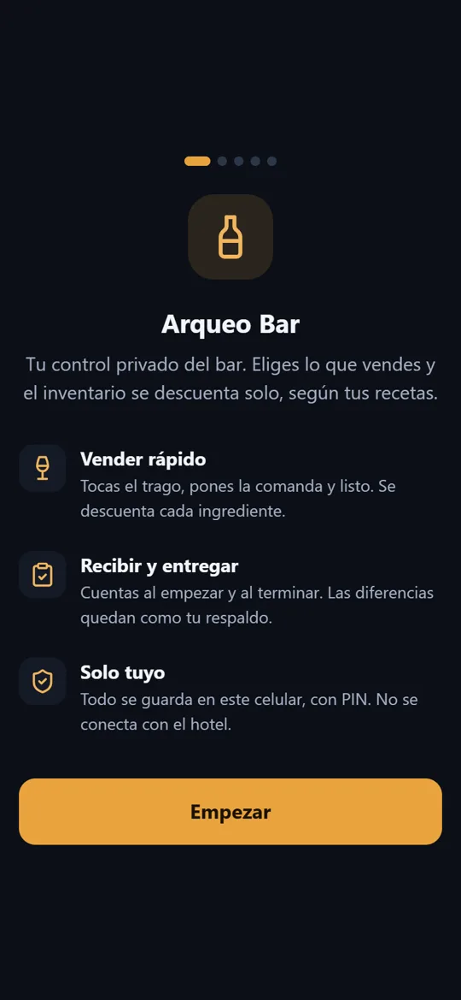
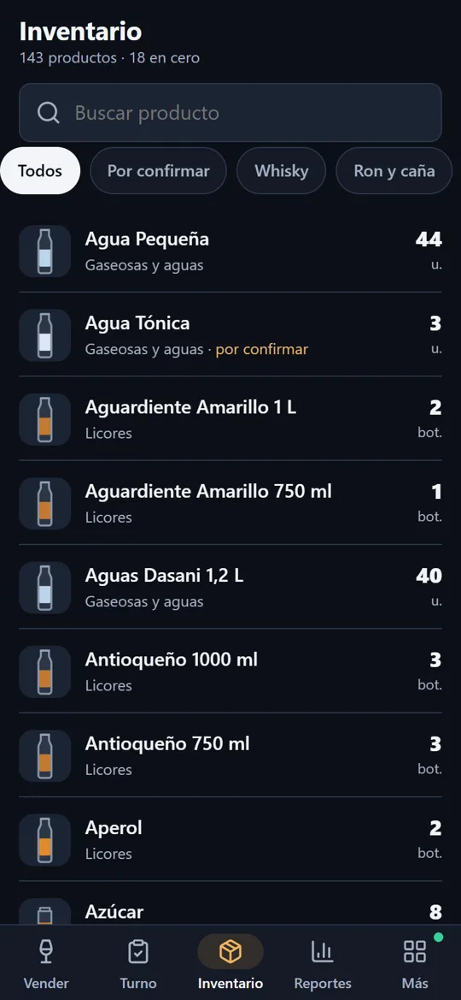
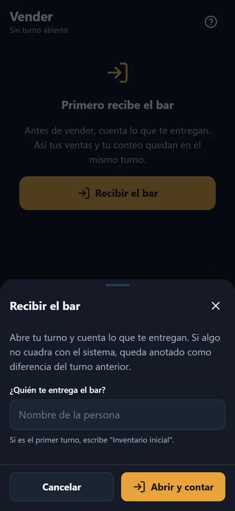

App Android
Arqueo Bar
El control del bar en el celular de quien lo atiende.
- Toca el trago vendido y el inventario se descuenta según la receta.
- Al empezar y al terminar el turno cuenta lo que recibe y entrega; las diferencias quedan de respaldo.
- 143 productos por categoría, reportes por día y por producto, y exportación a Excel.
- Funciona sin internet, con PIN, y se actualiza a distancia.
Android, Kotlin y JavaScript.


